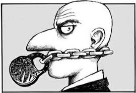
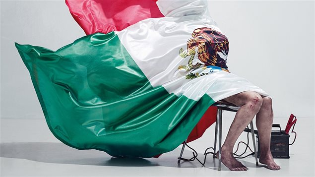

CENSURA EN MEXICO
Los inicios en el Mexico independiente
Desde el nacimiento del México independiente la libertad de expresión y de prensa ha ido abriéndose paso por sí sola, pues la prensa nació emparentada al poder, por ende, cualquier publicación que resultara incómoda al poder tendría su respectiva sanción.
Tanto la evolución como el ejercicio del periodismo en nuestro país ha sido muy duro, ya que desde sus inicios estuvo a favor del cambio político y esto lo caracterizó. En 1805 surge el Diario de México cuyas publicaciones eran gubernamentalistas y doctrinales. Sin embargo, poco a poco fue cambiando el discurso hasta llegar a la oposición y dejar en claro sus tendencias independentistas, como fue el caso de Jacobo de Villaurrutia y Carlos María de Bustamante quienes fueron perseguidos por las autoridades virreinales.
Hoy podemos hablar de cómo la libertad supuestamente triunfó ante la censura, y más cuando ayer 17 de octubre de 2018 Carmen Aristegui regresó al radio, después de que el gobierno de EPN y MVS la censuraran.
A lo largo de la historia de la prensa en México se pueden ver muchas leyes a favor de la libertad de prensa y de expresión, con excepciones durante los dos imperios y el porfiriato y ya bien entrados en el siglo XX comienza una represión tremenda auspiciada por el PRI.
El periodismo prácticamente desde su nacimiento ha sido víctima de censura, aunque se haya intentado garantizar la libertad de expresión. La Constitución de Apatzingán (1814), garantiza mayor protección al periodismo, establece que nadie podría prohibir a ningún ciudadano la libertad de hablar y manifestar sus opiniones mediante la imprenta. En 1857 incorpora libertades de imprenta y expresión. Se suprimió la prensa durante la segunda intervención francesa. Juárez, por su parte, defiende y promulga la Ley Orgánica de Prensa (1868).
El control gubernamental y los golpes a la prensa
Los(as) periodistas mexicanos(as) han pagado muy caro los avances en tema de libertad de prensa y expresión, los editores y reporters (aún no se castellanizaba) de la época les tocó que Venustiano Carranza creara la Ley de Imprenta (1917) con la que de alguna manera forma una censura institucionalizada. No obstante, hubo actos mucho más peligrosos como políticos de acción directa que mandaban personas a las imprentas para sabotear los tirajes echando miel en las máquinas para detener la producción, esto como primer aviso, también golpeaban a los editores, los amenazaban y por último si el mensaje no había quedado claro incendiaban el edificio como en los casos de El Pueblo de Hermosillo en 1928 y el Diario de Guadalajara en 1933.
No debemos olvidar el monopolio de la empresa (estatal) de papel PIPSA que desde los años treinta era la empresa que imponía el precio del papel para las revistas y los periódicos, con lo que se ejercía una fuerte presión por parte del gobierno mexicano contra la prensa independiente. Si esto no era suficiente, entonces se recurría a los sindicatos corporativos como en el caso del periódico Excélsior dirigido por Julio Scherer, cuando en 1976 se le dio un golpe contra todo su equipo para cambiar la dirección completa del diario. El resultado fue la salida del grupo de Scherer y el de Octavio Paz, quien dirigía la revista Plural como suplemento cultural de Excélsior. Ambos se fueron ara fundar el semanario Proceso y la revista Vuelta, respectivamente en ese mismo año de 1976.
Hoy día
Esta censura institucionalizada continua hasta el día de hoy y ha incrementado hasta convertir nuestro país en el quinto más peligroso para ejercer el periodismo, por esto digo que es un supuesto triunfo de la libertad ante la censura, ya que siempre habrá alguien que quiera callar a otro, pero es inadmisible que desde el año 2000 se registren más de 100 comunicadores asesinados y en los últimos 6 años más de 40 y cerca de 2000 agresiones hacia periodistas y reporteros.
Quizás los medios de comunicación siguen siendo el cuarto poder, sin embargo, considero que esos días están por terminar, pues la censura ya no es por parte del gobierno, sino de los medios y como estos se han expandido a través del internet a casi todas las personas, la comunicación se ha abierto, afortunadamente vivimos en una era en la que es más difícil censurar, pero es más fácil desinformar y ambas partes gracias a las benditas redes sociales.
Si bien, la ardua y difícil labor del periodista es crear opinión pública, hacer debate e invitar a la reflexión, pero no hay que olvidarnos que también mantienen un diálogo con el poder o con algún colega, muchas veces la parte de la opinión pública se deja a un lado para mantener cierta posición dentro del ámbito editorial. En el siglo XIX el periodismo era de opinión más que informativo, el periodista de hoy informa opinando, dirigido al colega o al poder. Los columnistas y articulistas de fondo (quienes son los mejores pagados en este reino), son quienes laboran de acuerdo con los intereses ideológicos o económicos según la línea editorial
